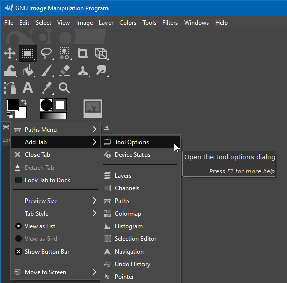

Figure 4.8. Restore missing tool options dialog

Restore missing tool options dialog using the Add Tab menu item.
The Tool Options Dialog
can get closed by accident. To get it back click on the
tab menu button
 to open the menu.
to open the menu.
From that menu choose and then .
You can also use → → . In this case, the dialog may turn up in a different dock than the one you want. If that happens, grab the tab that says Tool Options and drag it to where you need it.
Alternatively you can double-click any tool button in the Toolbox as a quick way to open the Tool Options.
![[Note]](images/note.png)
|
Note |
|---|---|
|
To make sure that this or any other dialog doesn't get moved or
closed by accident, you can lock it to the dock it is in. To enable
this, click on the
tab menu button
|